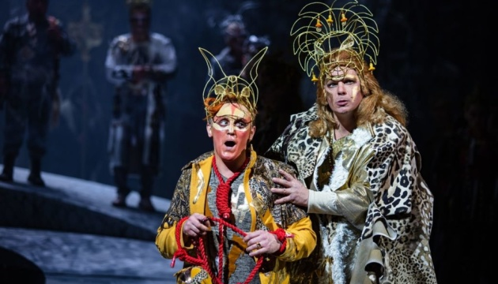
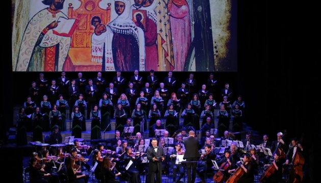
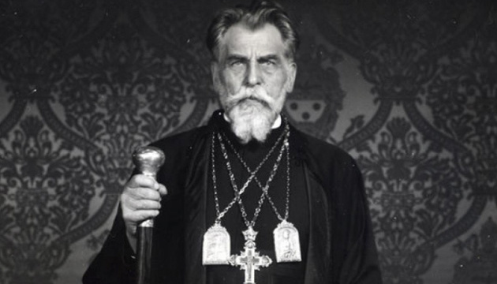
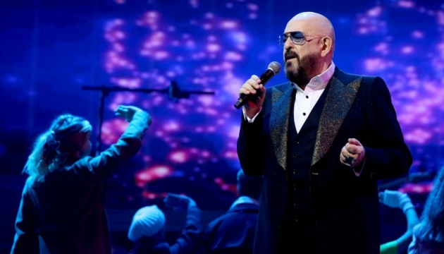

«Лис Микита» під омелою і війна за виживання. Путівник топ-виставами України
Триває серія публікацій експертних рецензій на кращі вистави українського театрального «Оскара».
Укрінформ продовжує знайомити читачів з виставами – переможцями IV всеукраїнського театрального Фестивалю-премії «ГРА».
Сьогодні виставу «Лис Микита» Львівського національного академічного театру опери та балету імені Соломії Крушельницької, який здобув номінацію «За найкращу музичну виставу в жанрі опери/оперети/мюзиклу» рецензує театрознавець, спеціаліст навчально-культурологічної лабораторії Національного університету «Києво-Могилянська академія», журналіст журналу «Кіно-Театр» Юлій Швець.
До проєкту «Український прорив» долучився нині й «Лис Микита» Львівської Опери. У постановці за поемою Івана Франка на музику Івана Небесного автор лібрето і режисер Василь Вовкун залучив провідних спеціалістів кількох країн, а на сцені загалом зайнято до 170-ти осіб творчого складу театру. Оригінальність і масштабність, а також ступінь творчої реалізації задуму дозволяють внести «Лиса Микиту» в список головних досягнень національного театру останніх років.
Поема Франка, можливо, як ніякий інший твір української літератури, об’ємно передає наратив старого й нового часу. З нього ми дізнаємося про таємні пружини взаємовідносин плебсу й еліти. Організована меншість традиційно панує над інертною неорганізованою більшістю, однак в особливі проміжки часу все ж втрачає здатність управляти державою і тому запрошує «до столу» спритних особистостей з «народу», передаючи їм повноваження, ставлячи їх на перші щаблі управлінської ієрархії. Парадоксальна ситуація, яка була блискуче відображена Франком ще 130 років тому на матеріалі тодішньої Галичини, віддзеркалюється останнім часом у політикумі сучасної України.
Це лише на позір український Поет досліджував локальну проблему «звіриного суду». Адже суд – це насправді цивілізований спосіб вирішення суперечок у людському суспільстві, в якому панує закон виживання сильнішого. Однак, історична статистика свідчить, що у більшості випадків і без суду, і через суд «виживає спритніший». Ще Ніколо Макіавеллі поділяв володарів на Лисів (уособлення підступності й хитрості) та Левів (персоніфікацію грубої сили), вказуючи, що частіше хитрі перемагають могутніх, аніж навпаки. Й у міфі про Лиса (довжелезний шлейф його літературних інтерпретацій тягнеться з початку Х століття) ця аксіома підтверджується: личина гуманізму та конституційності час від часу змушує втомлені політичні еліти оновлюватися, виносячи на поверхню плебейський андеграунд, котрий іззовні виглядає доволі пристойно, але обравши бажану ціль, на відміну від «заслужених патриціїв», – нікого не жаліє й нічого не пробачає.
Джерело: Укрінформ
Kalush Orchestra може погодитися представляти Україну на Євробаченні
Соліст Kalush Orchestra Олег Псюк не виключив, що гурт погодиться представляти Україну на міжнародному пісенному конкурсі "Євробачення"-2022 у Турині.
Як передає Укрінформ, про це він сказав в ефірі Радіо НВ.
На запитання ведучого щодо ухваленого Оргкомітетом Нацвідбору на "Євробачення" рішення запропонувати Kalush Orchestra представляти Україну на конкурсі Псюк заявив, що остаточну відповідь вони нададуть у п'ятницю, 18 лютого.
"Коли ми вже підпишемо… Я маю на увазі, коли ми підпишемо всі папери, то тоді ми зможемо заявити точно", - зазначив музикант.
Як повідомляв Укрінформ, на Національному відборі на "Євробачення"-2022 перемогу здобула Аліна Паш із піснею "Тіні забутих предків". Гурт Kalush з композицією "Стефанія" у загальному підсумку зайняв друге місце.
В інтернеті з'явилася інформація, що Паш виступала в тимчасово окупованому Криму. Люди пригадали інтерв'ю Катерині Осадчій, де співачка сказала, що перетнула кордон з Росії, летівши до Криму з Москви. Це розцінили як порушення правил участі в відборі. Невдовзі співачка заявила, що їхала до Криму автобусом з України.
Організатори Нацвідбору 14 лютого повідомили про готовність дискваліфікувати Паш, якщо підтвердиться, що співачка в'їжджала в Крим не з боку України.
15 лютого Державна прикордонна служба України поінформувала, що не створювала і не надавала документ, який Паш передала Суспільному мовнику в межах участі у відборі на "Євробачення".
Менеджерка Паш пояснила, що довідку про перетин адмінмежі з Кримом надавала не співачка особисто, а "член команди".
Джерело: Укрінформ
У Львівській опері презентували ораторію на текст заповіту Патріарха Йосифа Сліпого
У Львівській опері представили прем’єру ораторії українського композитора Ігоря Щербакова на текст заповіту Йосифа Сліпого «Великого бажайте!» з нагоди 130-річчя Патріарха.
Про це повідомляє пресслужба Львівської ОДА, передає Укрінформ.
«Сьогодні, у часі великої гібридної війни, яка триває вже 8 років, такі постаті, як Патріарх Йосиф, стають нам прикладом, а також опорою у дні сумнівів та тривоги. Він – один з тих, хто пройшов крізь жорстокі репресії тоталітарного режиму і не зрадив совісті й власного народу. Приклад його служіння Богу й Україні є зразком правильного життєвого шляху», - зазначив заступник голови Львівської ОДА Іван Собко.
Ораторію у Львівській опері виконали хор та камерний оркестр Заслуженої академічної капели «Трембіта» та симфонічний оркестр оперної студії Національної музичної академії ім. М. Лисенка. Під час концерту глядачі могли спостерігати відео іконописних робіт.
Разом з тим у Львівській опері відзначили 20-ту річницю єпископських свячень учня та послідовника Йосифа Сліпого, архієпископа та митрополита Львівського УГКЦ Ігоря Возьняка.
«Дуже важливо відчувати особливо в такі непрості часи, як сьогодні, підтримку церкви, яка в різний час завжди мала найбільші довіру і підтримку в людей. Такі ж довіру і підтримку маєте Ви! Повсякдень пам’ятаємо і шануємо Вас! Дякуємо за можливість отримувати мудрі поради», - привітав митрополита Собко.
Джерело: Укрінформ
Український католицький університет презентував мінісеріал про Йосифа Сліпого
Український католицький університет (УКУ) підготував мінісеріал з нагоди 130-річниці Патріарха Йосифа Сліпого. Протягом чотирьох днів серії презентуватимуть в Інстаграмі.
Про це пресслужба УКУ повідомила у Фейсбуці, передає Укрінформ.
«Сьогодні, 17 лютого, минає 130 років із дня народження Патріарха Йосифа Сліпого: глави Української Греко-Католицької Церкви, ісповідника віри, незламного захисника людської гідності, вченого-богослова, першого ректора Львівської богословської академії, спадкоємцем якого є Український католицький університет. Ми підготували для вас мінісеріал в Інстаграмі, аби розповісти про Патріарха. Протягом 4-х днів у коротких відео розповідаємо про життя Блаженнішого Йосифа», - зазначено у повідомлені.
Йосип Сліпий, саме так він відомий широкому загалу, хоча справжнє ім’я - Йосип Іванович Коберницький-Дичковський, народився 1892 року на Тернопільщині, у селі Заздрість. Навчався у Львівській духовній семінарії, пізніше за сприяння митрополита Андрея Шептицького в Австрії. З 1926 р. очолював духовну семінарію та богословську академію у Львові. У вересні 1917 р. був посвячений митрополитом Шептицьким у сан священника і понад 20 років був його найближчим соратником.
Джерело: Укрінформ
Квитки на концерт Шуфутинського у Києві продають попри заборону на в'їзд
Організатори концерту російського співака Михайла Шуфутинського в київському Палаці спорту, не скасовували заходу попри те, що виконавець не зможе перетнути кордон України.
Про це Укрінформу повідомив національний квитковий оператор Karabas.
"На сьогодні концерт в силі, інформації від організатора концерту про скасування не отримували", - повідомив квитковий оператор.
Як повідомляв Укрінформ, у Держприкордонслужбі заявили, що російський співак Михайло Шуфутинський, який раніше незаконно відвідував Крим, а у березні планує дати концерти в Києві, не зможе перетнути кордон України, оскільки отримає заборону на в’їзд за порушення законодавства.
Концерт Михайла Шуфутинського у київському Палаці спорту заплановано на 8 березня, вартість квитків - від 590 грн до 3 990 грн.
Джерело: Укрінформ